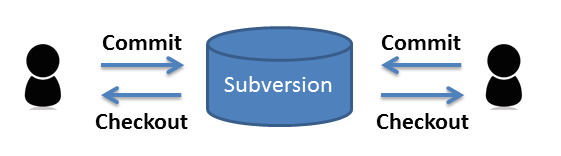
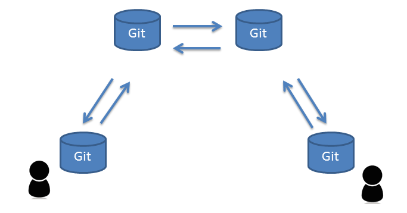
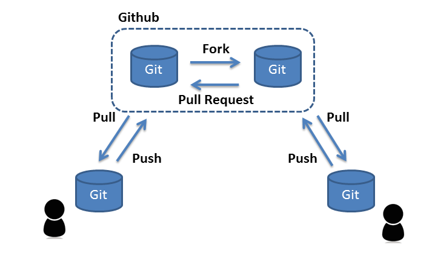
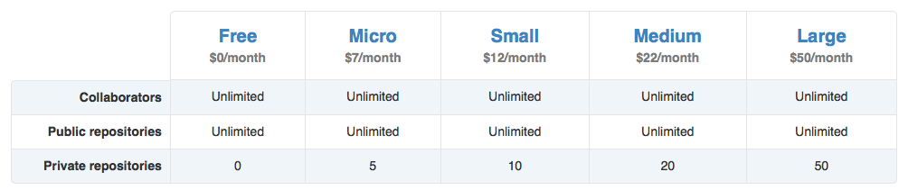
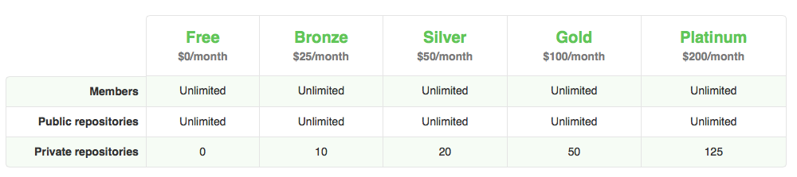

Github勉強会
2014/09/24
若松和憲
アジェンダ
- Githubとは
- Githubが提供する機能
- 実際にpullrequestまでやってみる
- 社内でこう使ってみる？
1. Githubとは

gitリポジトリの
ホスティングサービス
- 15.7 million repositories
- over 4 million active users
よくgitと混同されるが
- Gitは分散型構成管理システムと呼ばれる
構成管理を行うためのソフトウェア - GitHubはGitリポジトリを置く場所を
インターネット上に提供しているサービス
集中型構成管理

分散型構成管理

githubの最大の特徴は
「人中心」である事
従来のホスティングサイトはプロダクトが中心
Githubは人に注目
その人がどのソフトウェアに興味を持ち、どういった開発を行っているのかがわかる
例えば
Kohsuke Kawaguchiさん日本企業の採用でも利用されている
- サイバーエージェント
- DeNA
- ドワンゴ
Githubの登場によって
何が変わったか？
OSSの活動がより活発になった！
以前のOSS開発
- 一部のコミッタと呼ばれる人に
コードを改変する権利が限定 - コードの改変よりも、
コード改変の権利を得る事の方が大変
開発スピードDOWN
Githubの登場
OSS貢献への敷居が下がった！
開発スピードもUP
2. Githubが提供する機能
分散型構成管理
Githubサービスの範囲
Gitリポジトリ
- publicなリポジトリであれば無料で無数に作成可能
- privateなリポジトリは有料
Personal plans

リポジトリ毎に確認出来る事
- 使用言語
- Watch数
- Star数
- Fork数
- Contributers
- 他にもたくさんの情報
例
kohsuke/args4j
organization
- アカウントや権限の一括管理
- publicなリポジトリであれば無料
Organization plans

Issue
- 機能変更や修正を管理するための機能
- Issueを見ればその変更に関わる全てのことが確認可能
例
kohsuke/args4j/issues/84
コミットコメントでISSUE管理
- Issueからコメットにリンク
〇〇を修正しました #7××の対応完了 fixed #7Wiki
- 開発ドキュメントやマニュアルを記載するための機能
- Markdown形式で記述が可能
例
kohsuke/winsw/wiki
PullRequest
- 自分のリポジトリで変更した内容を、
他の人のリポジトリに取り込んでもらう要求を出す機能 - コードの差分の確認が可能
- pullrequestに関して議論出来る機能がある
- 行単位でのコメントが可能
例
kohsuke/winsw/pull/49
注目されている
ソフトウェアの閲覧
例
注目されている NoSQL databases
3. 実際にpullrequestまでやってみる
手順
- fork
- clone
- 開発
- commit
- push
- pull request
練習用リポジトリ
4. 社内でこう使ってみる？
社内システムでgithub
バグがあれば、直したい人が直す
文句があれば、直したい人が直す
新人研修でgithub
講師以外もコードを見てくれるかも
新人研修がオープンになる
配属先は配属前に新人のレベルがわかる
まとめ
Gitリポジトリのホスティングサービス
人中心
pullrequestの機能により簡単にOSS貢献が可能